의료장비안내
정확한 진단과 치료를 위한 의료장비
삼성G정형외과의 검사와 치료에 활용하는
주요 의료장비 안내
의료 장비 소개
-
X-RAYEXSYS DEXI
골절 등 이상 상태 확인을 위한 디지털 X-ray 촬영 장비골절·뼈 상태 확인을 위한 디지털 X-ray 장비
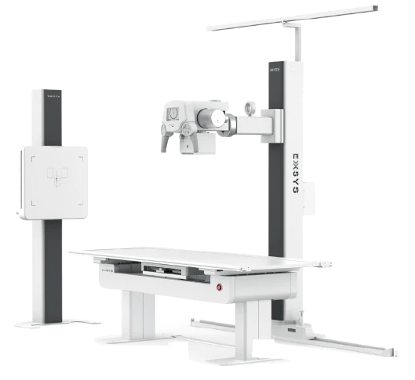
-
C-armEXTRON3
실시간 뼈·관절 영상 확인과 시술 위치 안내를 위한 영상 장비실시간 영상으로 시술 위치를 안내하는 장비
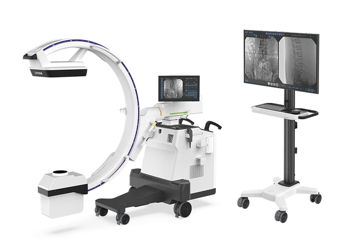
-
ESWTZEUS Wave
근육·힘줄 등 근골격계 통증 완화를 돕는 체외충격파 치료기근육·힘줄 통증 완화를 돕는 체외충격파 치료기
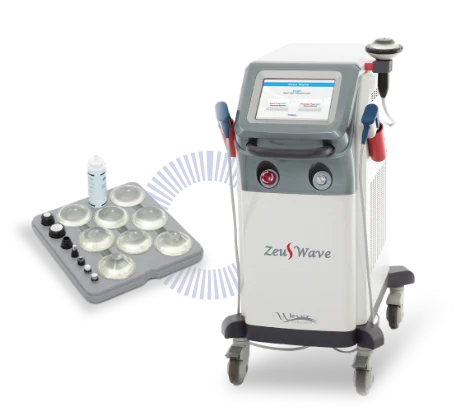
-
ICTD&B
간섭파 자극으로 근육 이완과 통증 완화를 돕는 물리치료기근육 이완과 통증 완화를 돕는 간섭파 치료기
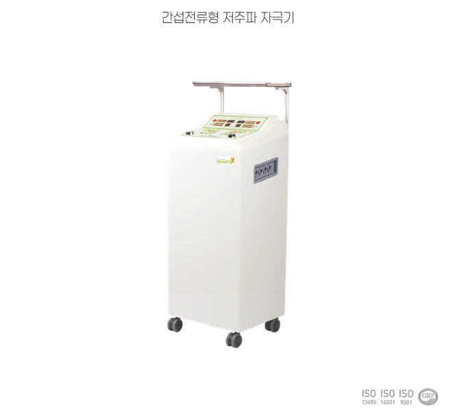
-
LaserHLA-200
레이저·적외선 에너지를 활용한 근육·관절 통증 관리 장비레이저·적외선을 활용한 근육·관절 통증 관리
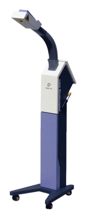
-
자기장치료기Tesla-3000
치료 부위에 펄스 자기장을 적용하는 물리치료기치료 부위에 펄스 자기장을 적용하는 치료기
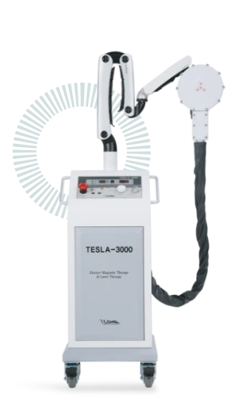
-
자기장치료기Neuro-MSL
신체의 필요한 부위에 펄스 자기장을 적용하는 비수술 치료기필요한 부위에 펄스 자기장을 적용하는 치료기
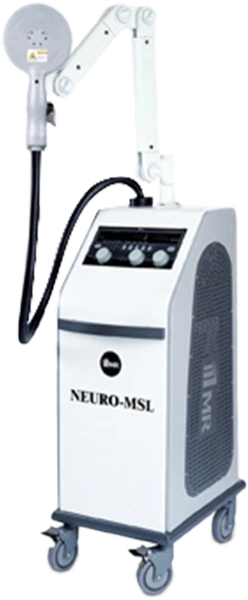
-
견인치료기LC-100
목·허리 견인으로 척추 주변의 부담을 줄이는 견인치료기목·허리 견인으로 척추 부담을 줄이는 치료기
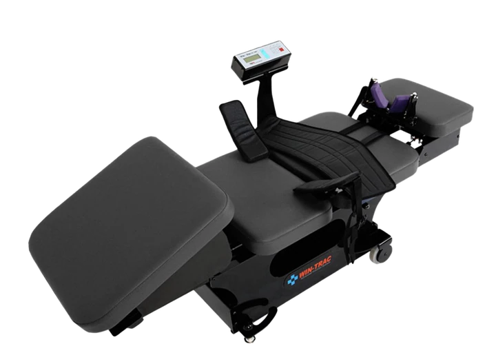
-
냉각치료기CRYO-MASTER
치료 부위에 냉각 자극을 적용하는 냉각치료기치료 부위에 냉각 자극을 적용하는 치료기
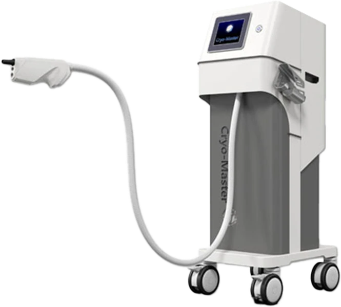
-
이온쿨러Multi-Ioncool
냉·온열, 초음파 및 약물 이온 전달을 활용하는 복합 치료기냉·온열, 초음파·이온 전달을 활용한 복합 치료기
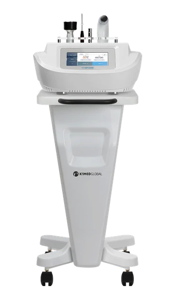
-
수치료기AQUA Line G4
온열 수압 마사지로 근육 이완과 피로 관리를 돕는 건식 수치료기온열 수압 마사지로 근육 이완을 돕는 수치료기
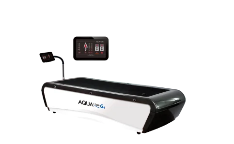
-
척추심부근육이완기CORELAX
척추 주변 심부근육의 이완을 돕는 치료기척추 주변 심부근육의 이완을 돕는 치료기
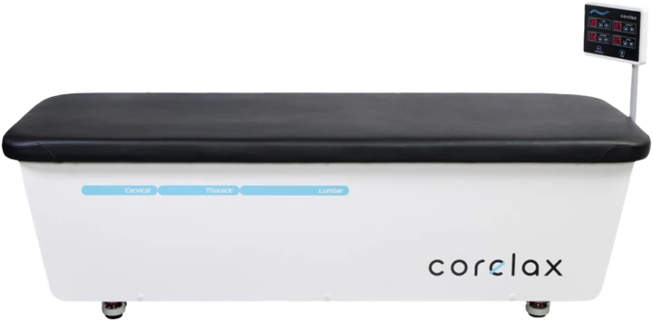
-
ULTRASOUNDSAMSUNG MEDISON V5
초음파로 연부조직 상태를 확인하는 영상진단 장비초음파로 연부조직 상태를 확인하는 진단 장비
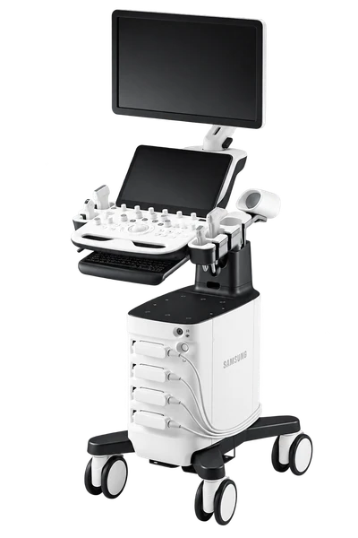
-
ULTRASOUNDSAMSUNG MEDISON V4
근육·힘줄 등 연부조직의 실시간 확인을 위한 초음파 진단 장비근육·힘줄 상태를 실시간 확인하는 초음파 장비
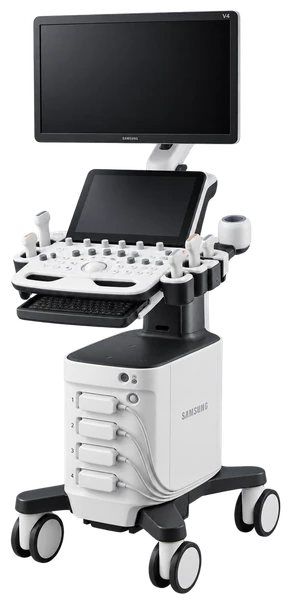
-
OsteoSysDEXXUM T Quantum
척추·대퇴골 등의 골밀도를 측정하는 X-ray 진단 장비척추·대퇴골 골밀도를 측정하는 X-ray 장비
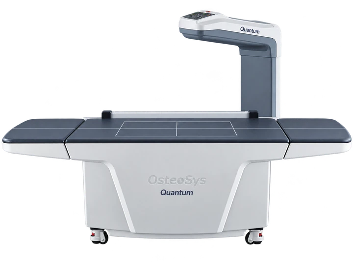